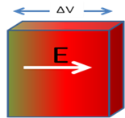

Dielectric strength
परावैधुत सामर्थ्य

- किसी परावैधुत पर उच्च विभव आरोपित करने का प्रभाव यदि किसी परावैधुत के दोनों सिरों के बीच विभवान्तर बढाते हैं तो वह चित्रानुसार परावैधुत के अन्दर विधुत क्षेत्र का मान बढायेगा।परिणाम स्वरुप पदार्थ में इलेकट्रान विस्थापित होगा। मगर यदि परावैधुत के दोनों सिरों के बीच विभवान्तर को बढाते जायें तो एक ऐसी स्थिति उत्पन्न होगी जिसमें परावैधुत के इलेक्ट्रान बहुत ज्यादा विस्थापित होकर अपने मूल नाभिक को छोड़ देंगे और विधुत क्षेत्र के अनुसार गमन करने लगेंगे जैसा की मुक्त इलेक्ट्रान करता है। परावैधुत एक विधुतरोधी कुचालक नही मगर सुचालक की तरह व्यवहार करने लगता है और उससे धारा प्रवाहित होने लगता है। यह प्रक्रिया परावैधुत का विधुत विभंजन कहलाता है।
- परावैधुत सामर्थ्य किसी परावैधुत के विधुत विभंजन के बिना उस पर आरोपित किये जा सकने वाली विधुत क्षेत्र की तीव्रता का अधिकतम मान, पदार्थ का परावैधुत सामर्थ्य कहलाता है।
- परावैधुत सामर्थ्य का S.I मात्रक N/C या V/m होता है मगर इसका व्यवहारिक मात्रक KV/mm होता है।